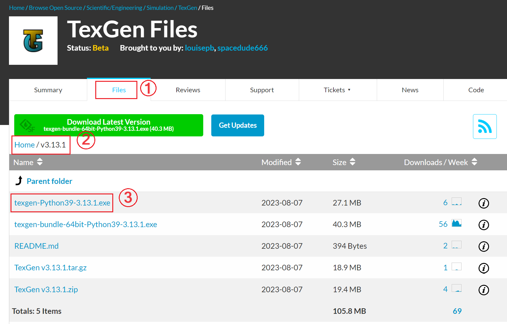

Integrate PolyTex with TexGen
TexGen software, developed at the University of Nottingham, is an excellent tool for building mesoscale models of textile reinforcements and composites. PolyTex can be used as a third-party package via Python 3.9 with the latest TexGen release (3.13.x). This allows data and methods provided by PolyTex to be directly accessed by TexGen to build ideal models of woven textiles and textile composites. To do this, you should install the TexGen package without Python bundled. A brief description is given below.
Download TexGen
Go to the Project Webpage: Navigate to the ``TexGen` download page on SourceForge.net <https://sourceforge.net/projects/texgen/>`_ and follow the steps shown in the figure below. Note that you need to download the release without Python bundled.
The
TexGenfile (texgen-Python39-3.13.1.exe) indicates that the currentTexGenpackage supports only Python 3.9.Install Python 3.9:
Go to the official website of Python: Download Python | Python.org and select the required Python version (Python 3.9). Here is the link to Python Release Python 3.9.13.
-
Install the
TexGenpackage downloaded in Step 1.TexGenwill automatically detect the installation of Python 3.9.
{kind=link}
{kind=link}
Install ``PolyTex`` in the Python 3.9 Environment:
PolyTexcan be installed simply by executing:pip install polytex==0.4.5
If multiple versions of Python are installed on your computer, specify the Python 3.9 installation directory in the pip command using the
--target=option:pip install polytex==0.4.5 --target=C:/Users/User/AppData/Local/Programs/Python/Python39/Lib/site-packages
Once the installation is complete, import
PolyTexin theTexGenPython console:import polytex
polytex.__author__
polytex.__version__
This should return the developer and version information of the installed ``PolyTex``.
At this point, all functions and data in PolyTex can be accessed by TexGen to build models. For different fabric structures, different TexGen scripts are required. Examples are provided in the TexGen repository louisepb/TexGenScripts: Sample scripts to demonstrate ``TexGen` scripting <https://github.com/louisepb/TexGenScripts>`_.